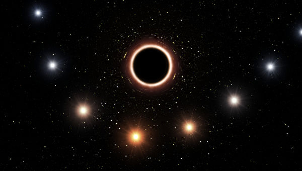
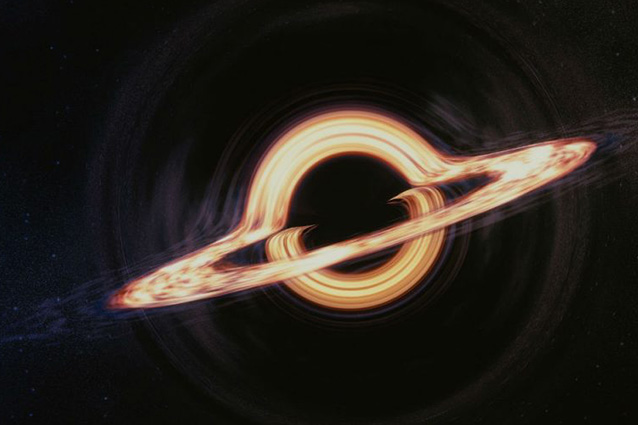

Привет, я Black hole!
Узнать большеЧёрная дыра́ — область пространства-времени, гравитационное притяжение которой настолько велико, что покинуть её не могут даже объекты, движущиеся со скоростью света, в том числе кванты самого света. Граница этой области называется горизонтом событий, а её характерный размер — гравитационным радиусом. В простейшем случае сферически симметричной чёрной дыры он равен радиусу Шварцшильда.
Теоретически возможность существования таких областей пространства-времени следует из некоторых точных решений уравнений Эйнштейна, первое из которых было получено Карлом Шварцшильдом в 1915 году. Изобретатель термина достоверно не известен, но само обозначение было популяризовано Джоном Арчибальдом Уилером и впервые публично употреблено в популярной лекции «Наша Вселенная: известное и неизвестное» (англ. Our Universe: the Known and Unknown) 29 декабря 1967 года. Ранее подобные астрофизические объекты называли «сколлапсировавшие звёзды» или «коллапсары» (от англ. collapsed stars), а также «застывшие звёзды» (англ. frozen stars).
Вопрос о реальном существовании чёрных дыр тесно связан с тем, насколько верна теория гравитации, из которой следует их существование. В современной физике стандартной теорией гравитации, лучше всего подтверждённой экспериментально, является общая теория относительности (ОТО), уверенно предсказывающая возможность образования чёрных дыр (но их существование возможно и в рамках других (не всех) моделей. Поэтому наблюдаемые данные анализируются и интерпретируются, прежде всего, в контексте ОТО, хотя, строго говоря, эта теория пока не является интенсивно экспериментально протестированной для условий, соответствующих области пространства-времени в непосредственной близости от горизонта чёрных дыр звёздных масс (однако хорошо подтверждена в условиях, соответствующих сверхмассивным чёрным дырам,  и с точностью до 94 % согласуется с первым гравитационно-волновым сигналом). Поэтому утверждения о непосредственных доказательствах существования чёрных дыр, в том числе и в этой статье ниже, строго говоря, следует понимать в смысле подтверждения существования астрономических объектов, таких плотных и массивных, а также обладающих некоторыми другими наблюдаемыми свойствами, что их можно интерпретировать как чёрные дыры общей теории относительности.
Кроме того, чёрными дырами часто называют объекты, не строго соответствующие данному выше определению, а лишь приближающиеся по своим свойствам к такой чёрной дыре — например, это могут быть коллапсирующие звёзды на поздних стадиях коллапса. В современной астрофизике этому различию не придаётся большого значения, так как наблюдаемые проявления «почти сколлапсировавшей» («замороженной») звезды и  «настоящей» («извечной») чёрной дыры практически одинаковы. Это происходит потому, что отличия физических полей вокруг коллапсара от таковых для «извечной» чёрной дыры уменьшаются по степенным законам с характерным временем порядка гравитационного радиуса, делённого на скорость света — то есть за доли секунды для чёрных дыр звёздных масс и часы для сверхмассивных чёрных дыр. 10 апреля 2019 года Национальный научный фонд США впервые показал фотографию сверхмассивной черной дыры в центре галактики Messier 87, расположенной на расстоянии 54 миллионов световых лет от Земли. Изображение получили благодаря проекту Event Horizon Telescope, который включает в себя восемь радиотелескопов, раскиданных по всему земному шару. «Полученная картинка подтверждает существование горизонта событий, то есть подтверждает правильность общей теории относительности Эйнштейна», — заявил один из руководителей проекта Event Horizon Telescop Лучано Реццола.